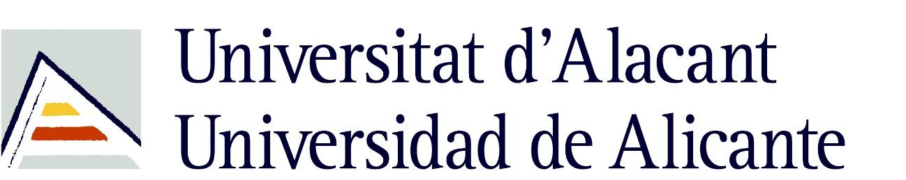
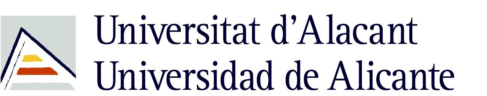
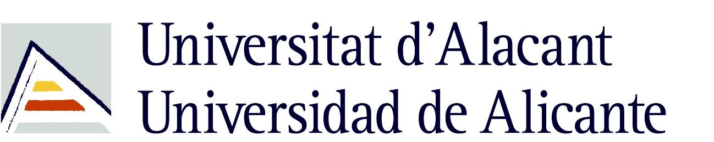
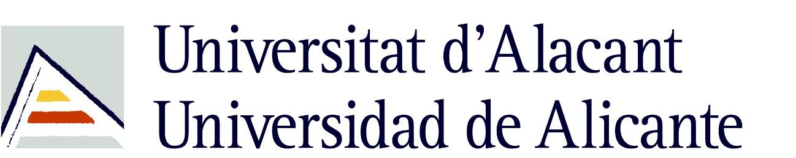

In this work, we estimate the depth in which domestic waste are located in space from a mobile robot in outdoor scenarios. As we are doing this calculus on a broad range of space (0.3 - 6.0 m), we use RGB-D camera and LiDAR fusion. With this aim and range, we compare several methods such as average, nearest, median and center point, applied to those which are inside a reduced or non-reduced Bounding Box (BB). These BB are obtained from segmentation and detection methods which are representative of these techniques like Yolact, SOLO, You Only Look Once (YOLO)v5, YOLOv6 and YOLOv7. Results shown that, applying a detection method with the average technique and a reduction of BB of 40%, returns the same output as segmenting the object and applying the average method. Indeed, the detection method is faster and lighter in comparison with the segmentation one. The committed median error in the conducted experiments was 0.0298 ± 0.0544 m.
The dataset used for detecting and recognising objects is publicly available at HOWA_dataset.
@article{PAEZUBIETA20239276,
title = {Detection and Depth Estimation for Domestic Waste in Outdoor Environments by Sensors Fusion},
journal = {22nd World Congress of the International Federation of Automatic Control (IFAC) & IFAC-PapersOnLine},
volume = {56},
number = {2},
pages = {9276-9281},
year = {2023},
doi = {10.1016/j.ifacol.2023.10.211},
author = {Ignacio de L. Páez-Ubieta and Edison Velasco-Sánchez and Santiago T. Puente and Francisco A. Candelas},
publisher={Elsevier}
}